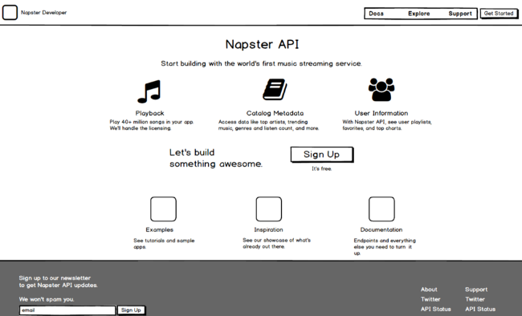
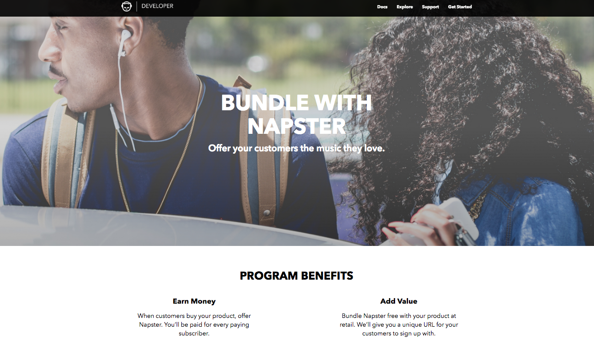

Napster Developer Portal Redesign
This project is a redesign of the website used by developers to access Napster's API, which can be used to play music. The objective was to:
- Change the website to solve known usability problems, and
- Make it easier for people to know that they can partner with Napster.

The ensuing redesign
Process
First, I assisted the API team with deploying a survey to current API users to learn what they wanted out of the website. We wanted a redesign to solve existing usability issues, such as confusion about whether developers needed to pay money in order to use the API. I also confirmed desired outcomes for the website, which included providing more clear information about partnerships with Napster, and an easy way for developers to sign up.
After that, I created a low-fidelity prototype and ran it through usertesting.com to sift out the usability issues in the overall layout and content. Participants were screened for familiarity with APIs.
Low-fidelity prototype of redesign (made with Balsamiq)
Once it was clear that we had found solutions to our main problems, I gave the low-fidelity mockup to our designer. He had enough resources to redesign the homepage; after that, I used his style to create high-fidelity mockups in Sketch for the remaining pages.
High-fidelity mockup of one of the partnership pages
Again, I ran the high-fidelity mockups through a usertesting.com study to ensure that the high-fidelity designs were still easy to understand. Then, I handed the mockups off to the development team using Zeplin.
Once the website was live, I ran another usertesting.com study to obtain feedback. Along with uncovering new opportunities for improvement, we received positive feedback on the cleanliness and coherence of the design. Additionally, so many people were requesting partnership information compared to before that the next design iteration called for some automation in responding to the requests. :)
Participant Feedback on the "Final" Design
"First impressions, [this website] looks really in-depth. It looks user-friendly. it pretty much lays out exactly what I need to know about the API. It looks...the fact that they point out there's documentation is great, I like the fact that they offer examples and tutorials. When you're starting out with a new API, that's super helpful."
"I'm definitely encouraged by how clean this [design] is, because that indicates to me that the API itself would also be clean. And that is something that I think [Napster] could offer over competitors for sure. Especially since there's a dedicated website to it."